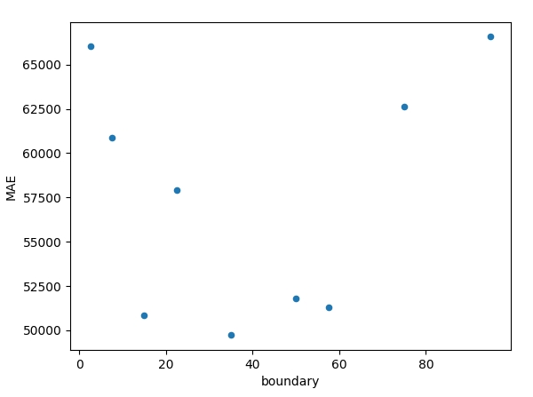

Regression Trees
Source: Machine_Learning_With_Python_IBM
What Is A Regression Tree
As we have already seen, decision trees can be used for classification, but we can also use them for regression, commonly called regression trees.
The basic idea behind regression trees is to split our data into groups based on features, like in classification, and return a prediction that is the average across the data we have already seen.
Consider the housing data below, where we are using the ‘Age’ to predict the ‘Price’ of a house.
import pandas as pd
import matplotlib.pyplot as plt
age = [1,2,5,7,7,15,39,45,32,21,55,64,75,62,79]
price = [515550.73, 491775.83, 457544.34, 506443.94, 524594.98, 368796.62, 362740.81, 361467.51, 411260.00, 390396.54, 94761.54, 115555.98, 73275.04, 116153.90, 135408.55]
house_pricing_data_1 = pd.DataFrame({'Age':age, 'Price':price})
house_pricing_data_1.plot.scatter("Age", "Price")
plt.show()
Here, we can see the difference age has on the house prices. Ages between 0 and 10 have an average price of approximately $500,000, ages between 10 and 50 have an average price of approximately $380,000 and houses older than 50 years have an average price of approximately $100,000. Using these general ranges, we can predict the price of a house.
Using the data above, we can create the regression tree, as shown below. The prices were determined by calculating the average price of the houses in the age range.

Criterion
The way the trees are built are similar to classification, but instead of using the entropy criterion. In Classification Trees, we choose features that increase the information gain. In Regression Trees, we choose features that minimize the error.
A popular one is the Mean Absolute Error, which we have also seen previously.
\(MAE =\frac{1}{n}\sum_{j=1}^{n}|y_j-\hat{y}_j|\)
How Regression Trees are Built?
Take the dataset sample shown below, the first step is to decide what the first decision is. We will do this by using the criterion and checking every single feature in the dataset to see which one produces the minimal error.
but first...
Categorical Features
Categorical features are simple, here we have Near Water so all we need to do is calculate the error if we used this as the first feature. Near Water feature has two categories: ‘Yes’ and ‘No’, therefore, we must calculate the average ‘Price’ of houses in the ‘Yes’ and ‘No’ categories. Then we use those values to calculate the average error.
index_1 = [0, 1, 2, 3, 4]
near_water_1 = ['No']*5
age_1 = [0,45,60,20,90]
price_1 = [260831.34, 222939.35, 101882.1, 226868.52, 94868.94]
average_house_price_1 = sum(price_1)/len(price_1)
absolute_error_no = [abs(i-average_house_price_1) for i in price_1]
index_2 = [5,6,7,8,9]
near_water_2 = ['Yes']*5
age_2 = [100,5,10,55,25]
price_2 = [197703.55, 347982.98, 343150.38, 206713.16, 329768.77]
average_house_price_2 = sum(price_2)/len(price_2)
absolute_error_yes = [abs(i-average_house_price_2) for i in price_2]
Index = index_1 + index_2
Near_water = near_water_1 + near_water_2
Age = age_1 + age_2
Price = price_1 + price_2
Average_house_prices = (average_house_price_1 , average_house_price_2)
Absolue_error = absolute_error_no + absolute_error_yes
MAE = sum(Absolue_error)/(len(Index))
MAE # 66383.1772
Numerical Features
Numerical features, like ‘Age’, are trickier to handle because we need to find a number, instead of using a category, to split the data by. We do this by creating a boundary between each point, then we calculate the error.
For example, first we create the boundary between the first two data points, which are (0, 260831.34) and (5, 347982.98), so we create a boundary of x = 2.5 (The midpoint between the x component of the first two data points).
house_pricing_data_2 = pd.DataFrame({"near_water": Near_water, "Age":Age, "Price":Price})
house_pricing_data_2.plot.scatter("Age","Price")
plt.plot([2.5]*40, [i*10000 for i in range(1,41)]); plt.title('Housing Data')
plt.show()
We now find the average price of the houses on the left and right sides of this boundary and use it to calculate the MAE.
house_pricing_data_2.sort_values("Age", inplace=True) # Don't forget to run!
house_pricing_data_2.reset_index(inplace=True) # Don't forget to run!
left = house_pricing_data_2['Price'][0]
right = house_pricing_data_2['Price'][1:]
left_avg = left if isinstance(left, float) else sum(left)/len(left)
right_avg = right if isinstance(right, float) else sum(right)/len(right)
left_error = house_pricing_data_2['Price'][0] - left_avg
right_error = abs(house_pricing_data_2['Price'][1:] - right_avg)
MAE = sum(left_error + right_error)/len(house_pricing_data_2)
MAE # 66055.242
boundaries = [(house_pricing_data_2.iloc[i]['Age'] + house_pricing_data_2.iloc[i+1]['Age'])/2 for i in range(house_pricing_data_2.shape[0]-1)]
house_pricing_data_2.plot.scatter("Age","Price")
for b in boundaries:
plt.plot([b]*40, [i*10000 for i in range(1,41)], 'r'); plt.title('Housing Data')
plt.show()
This process is then repeated for each boundary between each pair of consecutive points.
house_pricing_data_2.sort_values("Age", inplace=True) # Don't forget to run!
house_pricing_data_2.reset_index(inplace=True) # Don't forget to run!
MAEs = pd.DataFrame({"boundary":[],"MAE":[]})
for i,boundary in enumerate(boundaries):
left = house_pricing_data_2['Price'][:i+1]
right = house_pricing_data_2['Price'][i+1:]
left_avg = left if isinstance(left, float) else sum(left)/len(left)
right_avg = right if isinstance(right, float) else sum(right)/len(right)
left_error = [abs(y - left_avg) for y in house_pricing_data_2['Price'][:i+1]]
right_error = [abs(y - right_avg) for y in house_pricing_data_2['Price'][i+1:]]
# import pdb; pdb.set_trace()
left; right;
left_avg; right_avg;
left_error; right_error;
MAE = sum(left_error + right_error)/len(house_pricing_data_2)
print(f"MAE: {MAE}")
MAEs = pd.concat([MAEs, pd.DataFrame({"boundary":[boundary],"MAE":MAE})])
MAEs.plot.scatter("boundary","MAE"); plt.show()

We can see that the boundary 35 results in the lowest MAE (49726.547200) in this feature.
Choosing the Decision
Now, we compare the categorical MAE and the lowest numerical MAE, in this case, the categorical is 66383.1772, and the numerical is 49726.55. So, for the first decision, we will use the numerical ‘Age’ feature. We end up with a regression tree that looks like this:
Age<35
|
----------
| |
Yes No
| |
When do we Stop?
With the regression tree above, we have two options, we can either stop here and use the average value of the ‘Yes’ (left) and ‘No’ (right) to predict the house prices, or we can continue to add more decisions to either branch. There are a few conditions that are commonly used to stop growing regression trees:
• Tree depth • Number of remaining samples on a branch • Number of samples on each branch if another decision is made
The depth of the tree above, is 1, because there is a single decision and the number of samples on each side is 5. Let’s add more decisions until the depth of the tree is 2. First, we start with the ‘Yes’ (left) side and we calculate the MAE for the features using the houses that have ‘Age’ < 35.
Adding Decisions
Like before, we use the Near Water feature and calculate the MAE on houses with index 0, 3, 6, 7, and 9.
Near_water = ['No','Yes','Yes','No','Yes','No','Yes','No','No','Yes']
Age = [0,5,10,20,25,45,55,60,90,100]
Price = [260831.34,347982.98,343150.38,226868.52,329768.77,222939.35,206713.16,101882.10, 94868.94,197703.55]
house_pricing_data_2 = pd.DataFrame({"near_water": Near_water, "Age":Age, "Price":Price})
# First consider the age < 35 branch
house_pricing_data_2_l35 = house_pricing_data_2[house_pricing_data_2['Age'] < 35]
nw_age_l35 = house_pricing_data_2_l35[house_pricing_data_2_l35['near_water'] == 'Yes']['Age']
nw_price_l35 = house_pricing_data_2_l35[house_pricing_data_2_l35['near_water'] == 'Yes']['Price']
nw_avg_house_price = sum(nw_price_l35)/len(nw_price_l35)
nnw_age_l35 = house_pricing_data_2_l35[house_pricing_data_2_l35['near_water'] == 'No']['Age']
nnw_price_l35 = house_pricing_data_2_l35[house_pricing_data_2_l35['near_water'] == 'No']['Price']
nnw_avg_house_price = sum(nnw_price_l35)/len(nnw_price_l35)
nw_avg_house_price
nnw_avg_house_price
AEs = [abs(y - nw_avg_house_price) for y in nw_price_l35] + [abs(y - nnw_avg_house_price) for y in nnw_price_l35]
MAE = sum(AEs)/len(AEs)
MAE # 11005.339999999991
# Now, we find the MAE for the boundaries in the ‘Age’ feature.
boundaries = [(house_pricing_data_2_l35.iloc[i]['Age'] + house_pricing_data_2_l35.iloc[i+1]['Age'])/2 for i in range(house_pricing_data_2_l35.shape[0]-1)]
house_pricing_data_2_l35.sort_values("Age", inplace=True) # Don't forget to run!
house_pricing_data_2_l35.reset_index(inplace=True) # Don't forget to run!
MAEs = pd.DataFrame({"boundary":[],"MAE":[]})
for i,boundary in enumerate(boundaries):
left = house_pricing_data_2_l35['Price'][:i+1]
right = house_pricing_data_2_l35['Price'][i+1:]
left_avg = left if isinstance(left, float) else sum(left)/len(left)
right_avg = right if isinstance(right, float) else sum(right)/len(right)
left_error = [abs(y - left_avg) for y in house_pricing_data_2_l35['Price'][:i+1]]
right_error = [abs(y - right_avg) for y in house_pricing_data_2_l35['Price'][i+1:]]
# import pdb; pdb.set_trace()
left; right;
left_avg; right_avg;
left_error; right_error;
MAE = sum(left_error + right_error)/len(house_pricing_data_2_l35)
print(f"MAE: {MAE}")
MAEs = pd.concat([MAEs, pd.DataFrame({"boundary":[boundary],"MAE":MAE})])
MAEs.plot.scatter("boundary","MAE"); plt.show()
min(MAEs['MAE']) # lowest is 34029.657000000014
When compared to 11005.339999999991 from the near_water feature, 34029.65700000001 has more error. This means off of the 'Yes' branch or Age < 35 decision, the next decision should be near_water or not.
Age<35
|
----- -----
| |
Yes No
| |
----------
| |
near_w not_near_w
# Second consider the age > 35 branch
house_pricing_data_2_g35 = house_pricing_data_2[house_pricing_data_2['Age'] > 35]
nw_age_g35 = house_pricing_data_2_g35[house_pricing_data_2_g35['near_water'] == 'Yes']['Age']
nw_price_g35 = house_pricing_data_2_g35[house_pricing_data_2_g35['near_water'] == 'Yes']['Price']
nw_avg_house_price = sum(nw_price_g35)/len(nw_price_g35)
nnw_age_g35 = house_pricing_data_2_g35[house_pricing_data_2_g35['near_water'] == 'No']['Age']
nnw_price_g35 = house_pricing_data_2_g35[house_pricing_data_2_g35['near_water'] == 'No']['Price']
nnw_avg_house_price = sum(nnw_price_g35)/len(nnw_price_g35)
nw_avg_house_price
nnw_avg_house_price
AEs = [abs(y - nw_avg_house_price) for y in nw_price_g35] + [abs(y - nnw_avg_house_price) for y in nnw_price_g35]
MAE = sum(AEs)/len(AEs)
MAE # 35018.943333333336
# Now, we find the MAE for the boundaries in the ‘Age’ feature.
boundaries = [(house_pricing_data_2_g35.iloc[i]['Age'] + house_pricing_data_2_g35.iloc[i+1]['Age'])/2 for i in range(house_pricing_data_2_g35.shape[0]-1)]
house_pricing_dathouse_pricing_data_2_g35a_2_g35.sort_values("Age", inplace=True) # Don't forget to run!
house_pricing_data_2_g35.reset_index(inplace=True) # Don't forget to run!
MAEs = pd.DataFrame({"boundary":[],"MAE":[]})
for i,boundary in enumerate(boundaries):
left = house_pricing_data_2_g35['Price'][:i+1]
right = house_pricing_data_2_g35['Price'][i+1:]
left_avg = left if isinstance(left, float) else sum(left)/len(left)
right_avg = right if isinstance(right, float) else sum(right)/len(right)
left_error = [abs(y - left_avg) for y in house_pricing_data_2_g35['Price'][:i+1]]
right_error = [abs(y - right_avg) for y in house_pricing_data_2_g35['Price'][i+1:]]
# import pdb; pdb.set_trace()
left; right;
left_avg; right_avg;
left_error; right_error;
MAE = sum(left_error + right_error)/len(house_pricing_data_2_g35)
print(f"MAE: {MAE}")
MAEs = pd.concat([MAEs, pd.DataFrame({"boundary":[boundary],"MAE":MAE})])
MAEs.plot.scatter("boundary","MAE"); plt.show()
min(MAEs['MAE']) # lowest is 29732.71266666666
When compared to 35018.943333333336 from the near_water feature, 29732.71266666666 has less error. This means off of the 'No' branch or Age > 35 decision, the next decision should be Age again with the boundary set to 57.5.
Age<35
|
--------------- ---------------
| |
Yes No
| |
--Near_water-- ---Age<57.5---
| | | |
Yes No Yes No
Price: $A $B $C $D
Price: $341,911.57 $243,849.93 $214,826.26 $131,484.86
>>> house_pricing_data_2_g35
index near_water Age Price
0 5 No 45 222939.35
1 6 Yes 55 206713.16
2 7 No 60 101882.10
3 8 No 90 94868.94
4 9 Yes 100 197703.55
>>> house_pricing_data_2_l35
index near_water Age Price
0 0 No 0 260831.34
1 1 Yes 5 347982.98
2 2 Yes 10 343150.38
3 3 No 20 226868.52
4 4 Yes 25 329768.77
>>> A = (347982.98+347982.98+329768.77)/3 # 341,911.57666666666
>>> B = (260831.34+226868.52)/2 # 243,849.93
>>> C = (222939.35+206713.16)/2 # 214,826.255
>>> D = (101882.10+94868.94+ 197703.55)/3 # 131,484.8633333333
Regression Trees Lab
If the above was more the lecture, then this is hands on scikit-learn
# Setup Environment
cd ~/Desktop; rm -r temp; # To remove
cd ~/Desktop; mkdir temp; cd temp; pyenv activate venv3.10.4;
wget https://cf-courses-data.s3.us.cloud-object-storage.appdomain.cloud/IBMDeveloperSkillsNetwork-ML0101EN-SkillsNetwork/labs/Module%203/data/real_estate_data.csv
Data
Imagine you are a data scientist working for a real estate company that is planning to invest in Boston real estate. You have collected information about various areas of Boston and are tasked with created a model that can predict the median price of houses for that area so it can be used to make offers.
The dataset had information on areas/towns not individual houses, the features are
- CRIM: Crime per capita
- ZN: Proportion of residential land zoned for lots over 25,000 sq.ft.
- INDUS: Proportion of non-retail business acres per town
- CHAS: Charles River dummy variable (= 1 if tract bounds river; 0 otherwise)
- NOX: Nitric oxides concentration (parts per 10 million)
- RM: Average number of rooms per dwelling
- AGE: Proportion of owner-occupied units built prior to 1940
- DIS: Weighted distances to five Boston employment centers
- RAD: Index of accessibility to radial highways
- TAX: Full-value property-tax rate per $10,000
- PTRAIO: Pupil-teacher ratio by town
- LSTAT: Percent lower status of the population
- MEDV: Median value of owner-occupied homes in $1000s
# Pandas will allow us to create a dataframe of the data so it can be used and manipulated
import pandas as pd
# Regression Tree Algorithm
from sklearn.tree import DecisionTreeRegressor
# Split our data into a training and testing data
from sklearn.model_selection import train_test_split
data = pd.read_csv("real_estate_data.csv")
data.head()
data.shape
# Counts per col of missing data
data.isna().sum()
# Let's drop for now
data.dropna(inplace=True)
data.isna().sum()
# Lets split the dataset into our features and what we are predicting (target)
X = data.drop(columns=["MEDV"]) # indep vars
Y = data["MEDV"] # dep var
# Use our buddy train_test_split
X_train, X_test, Y_train, Y_test = train_test_split(X, Y, test_size=.2, random_state=1)
Create Regression Tree
Regression Trees are implemented using DecisionTreeRegressor from sklearn.tree. The important parameters of DecisionTreeRegressor are:
criterion: {'squared_error', 'absolute_error', 'poisson', 'friedman_mse'} - The function used to measure errormax_depth- The max depth the tree can be:min_samples_split- The minimum number of samples required to split a nodemin_samples_leaf- The minimum number of samples that a leaf can containmax_features: {"auto", "sqrt", "log2"} - The number of feature we examine looking for the best one, used to speed up training
First lets start by creating a DecisionTreeRegressor object, setting the criterion parameter to squared_error for Squared Error:
Train
regression_tree = DecisionTreeRegressor(criterion = "squared_error")
regression_tree.fit(X_train, Y_train)
Evaluation
To evaluate our dataset we will use the score method of the DecisionTreeRegressor object providing our testing data, this number is the \(R^2\) value which indicates the coefficient of determination
# This seems like a predict and score all in one action
regression_tree.score(X_test, Y_test) # 0.8434693703647671
# We can also find the average error in our testing set which is the average error in median home value prediction
prediction = regression_tree.predict(X_test)
print("$",(prediction - Y_test).abs().mean()*1000) # $ 2729.1139240506322